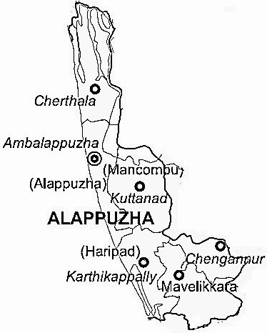

ALAPPUZHA
Alappuzha , also known by its former name Alleppey, is the administrative headquarters of Alappuzha District in the Indian State of Kerala. Alappuzha is a city and a municipality in Kerala with an urban population of 174,164 and ranks third among the districts in literacy rate in the State of Kerala. In 2016, the Centre for Science and Environment rated Alappuzha as the cleanest town in India. Alappuzha is considered to be the oldest planned city in this region and the lighthouse built on the coast of the city is the first of its kind along the Laccadive Sea coast.
The city is situated 28 km from Changanacherry, 46 km from Kottayam, 55 km from Kochi, 129.4 km from Thrissur and 155 km north of Trivandrum.A town with canals, backwaters, beaches, and lagoons, Alappuzha was described by Lord Curzon as the "Venice of the East." Hence, it is known as the "Venetian Capital" of Kerala. In Alappuzha, Malayalam is the most spoken language.
It is an important tourist destination in India. The Backwaters of Alappuzha is one of the most popular tourist attractions in Kerala which attracts millions of domestic and international tourists to the district and employs vast number of locals in the private sector. A houseboat cruise in these backwaters can be booked. It connects Kumarakom and Cochin to the North and Quilon to the South. Apart from houseboat services, the Kerala State Water Transport Department provides government boat services within the district and Quilon (Kollam) which considers the best and cheapest way to explore the Backwaters of Alleppey. 
Tourist places

Kuttanad Backwaters
One of the best places to visit in Alleppey is Kuttanad Backwaters.It's a phenomenon

Alleppey Lighthouse
Famous as the Alappuzha lighthouse, the Alleppey lighthouse can be spotted from miles away.

Marari Beach
If you want to unwind completely, then the Marari Beach is a must-visit destination for you.